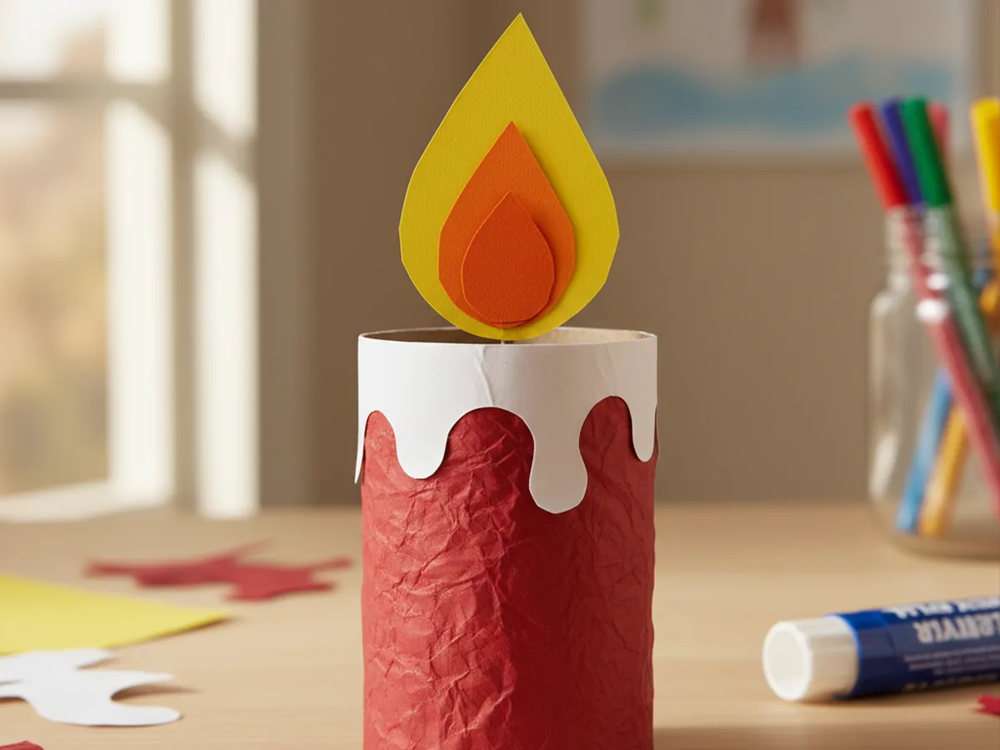
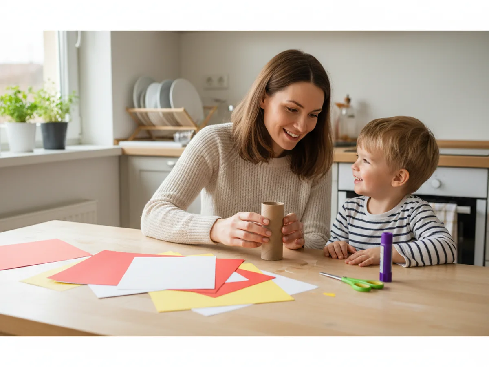
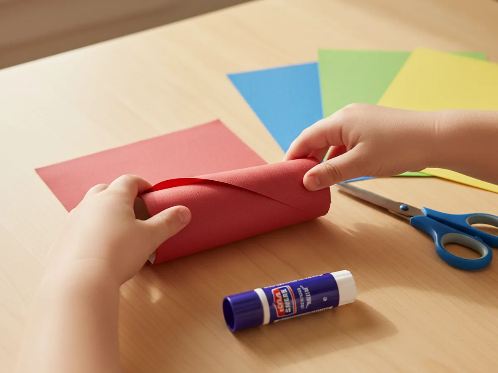
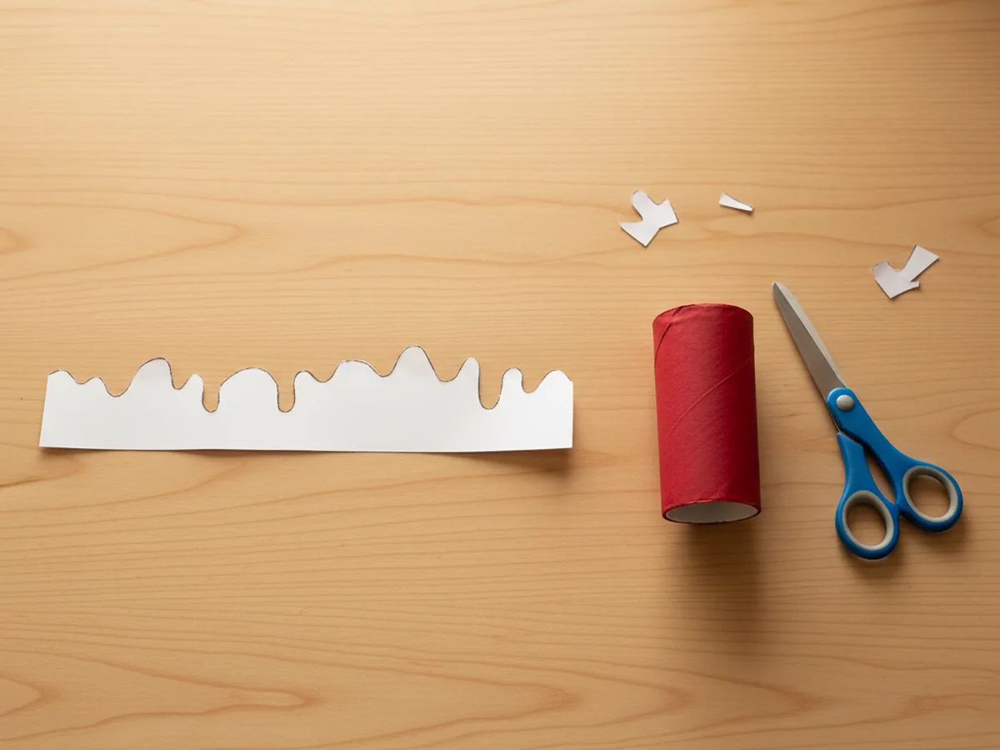
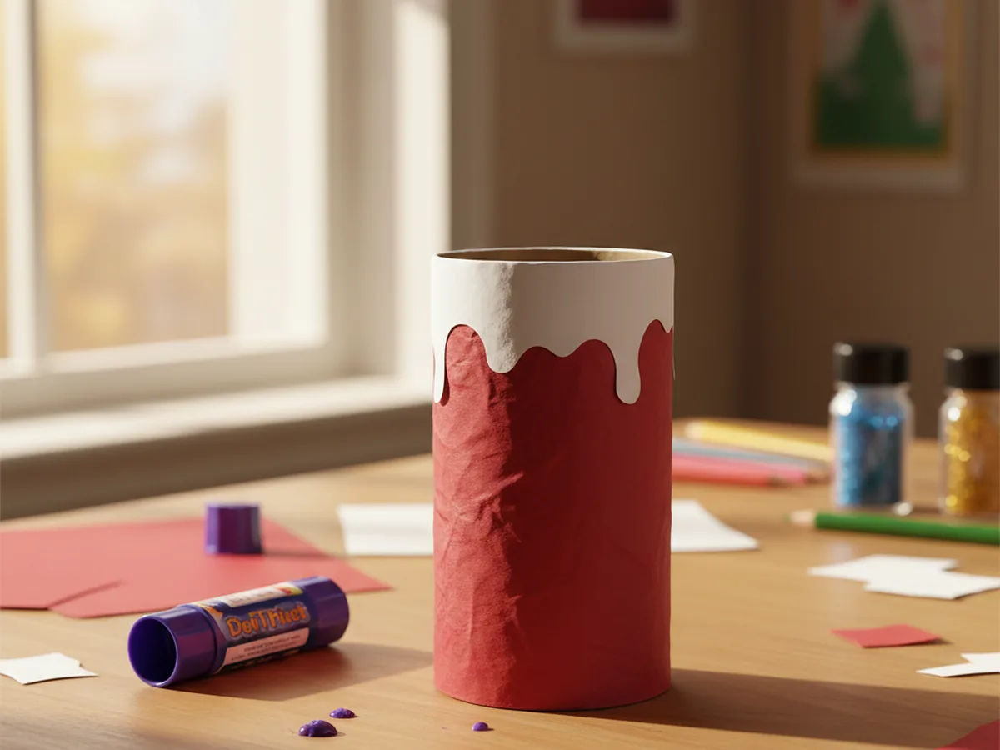
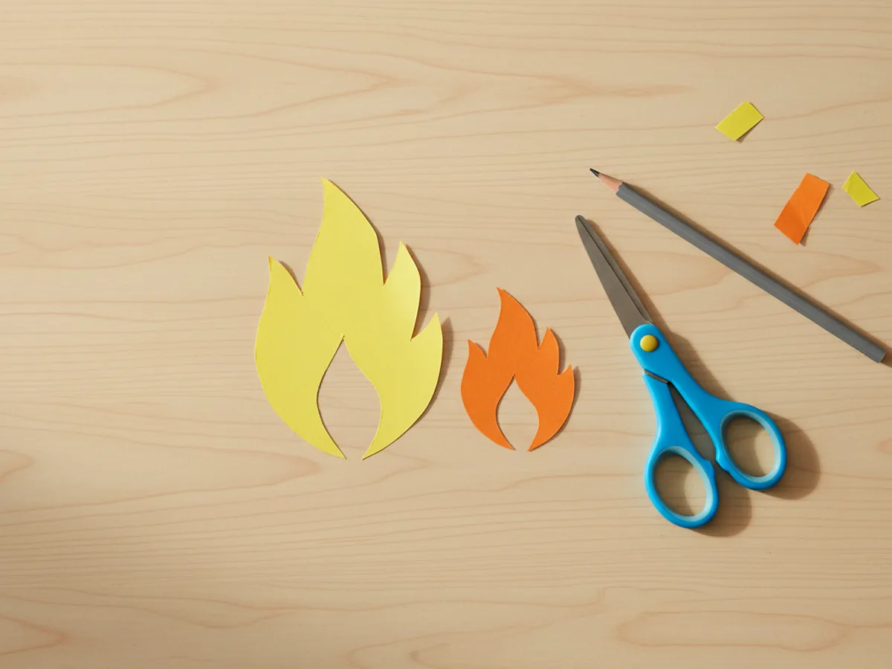
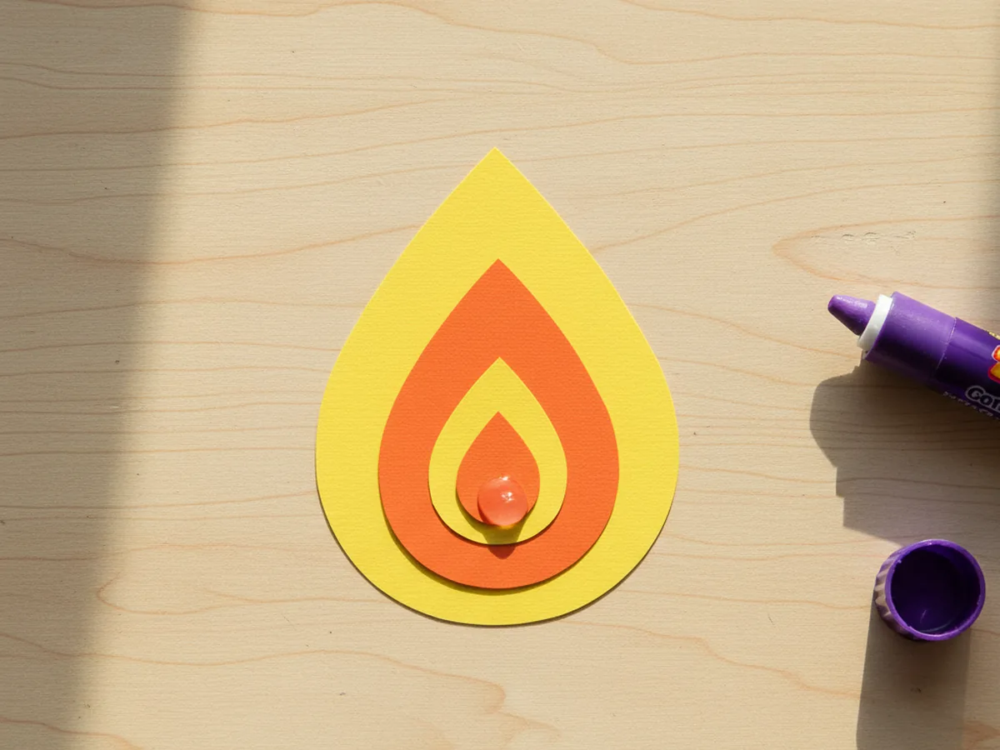
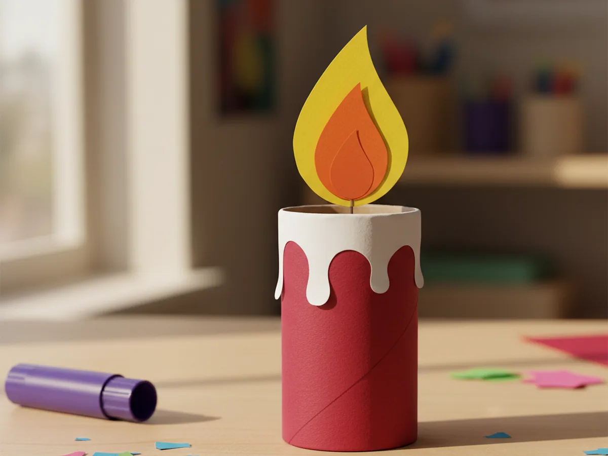

If you are looking for a sweet, safe little craft that gives your child the cozy magic of a candle without any real flame, this paper candle craft is going to be such a fun afternoon together. 🕯️ With just an empty toilet paper roll, a few sheets of construction paper, and a glue stick, you can turn an ordinary kitchen table into a tiny candlelight workshop. No matches, no melted wax, no stress. Just a warm shared moment and the proud little gasp at the end when your kiddo holds up their flickery looking masterpiece.
The best part of this easy paper candle craft is how forgiving it is. Wobbly cuts make better wax drips. A slightly tilted flame somehow looks even more charming. And the whole thing is finished in about 25 minutes, which means you can squeeze it in between dinner and bath time, or set it up as a cozy rainy-day project. Whether your little one is 3 or 8, this is one of those crafts that ends with everyone smiling.
Why Kids Love This Craft
There is something a little bit magical about candles in a child's eyes. They light up rooms, they appear on birthday cakes, they flicker on quiet winter evenings. Letting your kiddo "make their own" with this paper candle craft for kids gives them the same warm feeling, but in a totally safe way. They can pick the color, choose the size of the flame, and decide whether their candle is a chunky pillar or a tall skinny taper. That little bit of creative ownership goes such a long way with little hearts.
From a developmental angle, this cute paper candle craft is a gentle workout for small hands. Wrapping the paper around the roll, snipping the wavy drip edge, and cutting out the teardrop flame all build hand-eye coordination, scissor control, and patience. Even toddlers around age 3 can do most of the gluing and decorating with a tiny bit of help on the trickier cuts. It is the kind of craft that meets a child wherever they are.
And the finished result feels real. A child who has just made a paper roll candle craft will hold it up like a trophy, line it up with their other creations, and want to show every visitor who walks through the door. The flame looks like it is dancing, the drips look just like the real ones on grandma's dinner table, and the pride is enormous. It is the perfect ratio of tiny effort to huge smile. 💛

What You'll Need
Here is everything you need to make this paper candle craft from start to finish. Set it all out on the table before you call your little helper over so the whole activity flows smoothly without interruption.
- Crayola Construction Paper (240 sheets, assorted colors), you will use one sheet for the candle body, plus white, yellow, and orange for the drips and flame.
- Elmer's Disappearing Purple Glue Sticks (6 + 2 bonus), washable and easy for tiny hands to grip and twist.
- Fiskars Blunt-Tip Kids Scissors, safe and reliable for ages 3 and up.
- Crayola Broad Line Washable Markers (10 ct), for adding fun stripes, dots, or a name to the candle body.
- One empty toilet paper roll, the perfect candle base and a great way to use a kitchen recyclable.
- A pencil, for lightly sketching the flame shape before cutting.
Step-by-Step Instructions
This paper candle craft step by step is short, sweet, and very forgiving. Work through each step at your child's pace and let them take the lead on whichever parts feel exciting to them.
Step 1: Wrap the Candle Body
Lay a sheet of colored construction paper flat on the table. Red, white, blue, or green all look gorgeous as candle colors, so let your child pick the one that feels right. Place the empty toilet paper roll along one short edge of the paper, then carefully roll it up so the paper wraps fully around the tube. Trim any excess paper that sticks out at the top or bottom, then use the glue stick to seal the loose edge down. Your candle body is officially ready.
If the construction paper is taller than the toilet paper roll, simply fold the extra bit down into the inside of the tube. It tucks away invisibly and gives the top edge a nice clean finish. Press the glued edge firmly for a few seconds so it stays in place while you move on to the next step.

Step 2: Cut the Wavy Wax Drips
Take a sheet of white construction paper and cut a long strip about an inch and a half wide and as long as the candle is around. Along one long edge of the strip, snip a series of soft round bumps and shallow dips to look like melted wax drips. The shapes do not need to match. In fact, the more uneven they are, the more they look like real candle wax that has run down the sides.
Show your child the wavy edge and let them help you snip a few of the bumps. Even a toddler can handle the simple curved snips with a little hand-over-hand guidance. The straight bottom edge of the strip will be glued onto the candle in the next step, so leave that line tidy and unsnipped.

Step 3: Glue the Drips Around the Top
Apply a thin line of glue stick along the smooth straight edge of the white drip strip. Carefully wrap it around the top of the candle body so the wavy edge points upward and slightly hangs over the rim of the toilet paper roll. Press it gently against the candle body all the way around so it sticks evenly. Once you reach the starting point again, trim off any extra and press the seam down firmly.
This is the step where your paper candle craft really starts to look like a real candle. The little dripping wax effect adds so much warmth and personality. Take a moment to admire it together before moving on to the flame.

Step 4: Cut the Flame Shapes
Now for the most fun cut of the whole project. From yellow construction paper, draw a tall teardrop shape with a pencil, roughly the height of two fingers stacked. Cut it out with the kid scissors. Then take a sheet of orange construction paper and draw a smaller teardrop, about two thirds the size of the yellow one. Cut that out too. You should now have two flame shapes ready: a big yellow one and a smaller orange one.
Pre-drawing the outlines is helpful for younger children, but older kids around age 6 and up usually love sketching the flame freehand. There is no wrong shape here. Slightly lopsided flames look like they are actually flickering.

Step 5: Layer the Flame
Apply a small dab of glue stick to the back of the orange teardrop. Center it on top of the yellow flame, sitting a little above the bottom edge so a ring of yellow still shows around the orange. Press it down for a few seconds until it sticks. The flame now has that beautiful two-tone glow you see in real candlelight, with a bright orange center and a soft yellow outer halo.
Your child will probably want to hold the flame up to the light at this point. Let them. That little burst of pride is the heart of every Craft with Mommy project.

Step 6: Attach the Flame to the Candle
At the very bottom of the flame, fold up a small paper tab about half an inch tall. This little tab will be your gluing surface. Apply glue stick to the underside of the tab, then press it firmly against the inside top of the candle body so the flame stands straight up out of the candle. Hold it in place for about ten seconds while the glue grabs. Once it is secure, gently let go and watch the flame rise proudly from the top of your candle.
Your handmade paper candle craft is now finished. If your child wants to add finishing touches, this is the perfect moment for marker stripes around the candle body, polka dots, a written name, or even a tiny heart. Every candle ends up totally unique. 🎨

Variations to Try
Birthday Candle Bouquet: Make a whole bunch of skinny paper candles using paper towel rolls cut into thirds. Tie them together with a ribbon and pop them on the kitchen table for a birthday morning surprise. Each little candle can be a different color, like a cheerful bouquet of light just for the birthday kid.
Tea Light Version with a Real Glow: Skip the paper flame entirely and drop a battery-operated LED tea light into the top of the candle so it lights up safely from the inside. The soft warm glow that peeks out through the top of the toilet paper roll is absolutely magical at bedtime, with zero fire risk.
Advent Candle Set: Make four paper candles together for the four weeks leading up to Christmas. Use deep red or evergreen paper, add a sprig of green paper holly around the base, and arrange them on a circular paper plate base to create a sweet handmade Advent wreath centerpiece. Your child will love watching the set grow week by week.
Final Thoughts
This paper candle craft is one of those gentle projects that gives a huge amount of joy for almost no setup. It comes together in about 25 minutes, the materials are things you very likely already have around the house, and the finished candle is sturdy enough to display for weeks on a shelf, a windowsill, or a holiday table. The cleanup is just a few paper scraps in the recycling bin, and your little one walks away beaming.
If you and your child make a paper candle together, I would love to see it. Share a photo on Pinterest and pin this article so other families can find it too. Happy crafting!
More Crafts You'll Love
If this cozy little candle made your kiddo smile, these other warm and glowy paper crafts are just as easy and just as sweet: